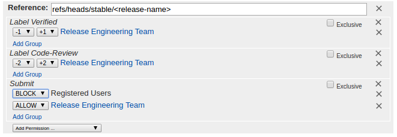

At the first Release Candidate (RC) the Submit button is disabled on the
stable branch to prevent projects from merging non-blocking patches
into the release.
Disable Submit for Registered Users and allow permission to the
Release Engineering Team(Helpdesk)

Important
DO NOT enable Code-Review+2 and Verified+1 to the
Release Engineering Team during code freeze.
Note
Enable Exclusive checkbox for the submit button to override any
existing permissions. Code-Review and Verify permissions are only needed
during version bumping.
This step can be achieved with the self-service job to lock or unlock a Gerrit
branch using autorelease-gerrit-branch-lock-${STREAM} job on Jenkins CI.
After release candidate is built GPG sign artifacts using the
lftools sign command.
STAGING_REPO=autorelease-1903
STAGING_PROFILE_ID=abc123def456# This Profile ID is listed in Nexus > Staging Profiles
lftoolssigndeploy-nexushttps://nexus.opendaylight.org$STAGING_REPO$STAGING_PROFILE_ID
Verify the distribution-karaf file with the signature.
Projects such as OpFlex participate in the Simultaneous Release but are not
part of the autorelease build. Ping those projects and prep their staging
repository as well.
The following describes the Simultaneous Release process for shipping out the
binary and source code on release day.
Bulleted actions can be performed in parallel while numbered actions should be
done in sequence.
Release the Nexus Staging repository
(Helpdesk)
Select both the artifacts and signature repository
(created previously) and clickRelease.
Enter ReleaseOpenDaylight$RELEASE for the description and
clickconfirm.
Perform this step for any additional projects that are participating in
the Simultaneous Release but are not part of the autorelease build.
Tip
This task takes hours to run so kicking it off early is a good idea.
Version bump for next dev cycle
(Release Engineering Team)
Run the autorelease-version-bump-${STREAM} job
Tip
This task takes hours to run so kicking it off early is a good idea.
Enable Code-Review+2 and Verify+1 voting permissions
for the ReleaseEngineeringTeam(Helpdesk)
Note
Enable Exclusive checkbox for the submit button to override any
existing permissions. Code-Review and Verify permissions are only needed
during version bumping. DO NOT enable it during code freeze.
Merge all patches generated by the job
Restore Gerrit permissions for Registered Users and disable elevated
Release Engineering Team permissions
(Helpdesk)
Tag the release
(Release Engineering Team)
Install lftools
lftools contains the version bumping scripts we need to version bump
and tag the dev branches. We recommend using a virtualenv for this.
# Skip mkvirtualenv if you already have an lftools virtualenv
mkvirtualenvlftools
workonlftools
pipinstall--upgradelftools
Pull latest autorelease repository
exportRELEASE=Nitrogen-SR1
exportSTREAM=${RELEASE//-*}exportBRANCH=origin/stable/${STREAM,,}# No need to clean if you have already done it.
gitclone--recursivehttps://git.opendaylight.org/gerrit/releng/autorelease
cdautorelease
gitfetchorigin
# Ensure we are on the right branch. Note that we are wiping out all# modifications in the repo so backup unsaved changes before doing this.
gitcheckout-f
gitcheckout${BRANCH,,}
gitclean-xdff
gitsubmoduleforeachgitcheckout-f
gitsubmoduleforeachgitclean-xdff
gitsubmoduleupdate--init
# Ensure git review is setup
gitreview-s
gitsubmoduleforeach'git review -s'
Email dev/release/tsc mailing lists to notify of tagging and version bump
completion
(Release Engineering Team)
Note
This step is performed after Version Bump and Tagging steps are
complete.
Generate Service Release notes
Warning
If this is a major release (eg. Chromium) as opposed to a Service Release
(eg. Chromium-SR1). Skip this step.
For major releases the notes come from the projects themselves in the docs
repository via the docs/releaset-notes/projects directory.
For service releases (SRs) we need to generate service release notes. This
can be performed by running the autorelease-generate-release-notes-$STREAM
job.
Run the autorelease-generate-release-notes-${STREAM} job
(Release Engineering Team)
Trigger this job by leaving a Gerrit comment
generate-release-notesCarbon-SR2
Release notes can also be manually generated with the script:
A release-notes.rst will be generated in the working directory. Submit
this file as release-notes-sr1.rst (update the sr as necessary) to the
docs project.